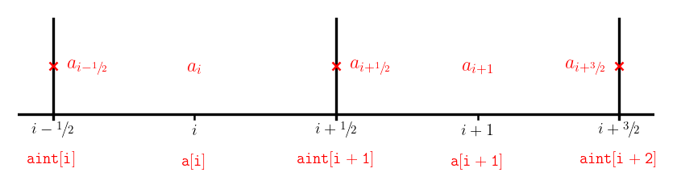

Second-order advection#
To get a more accurate solution, we need to handle both the space and time discretizations in a higher order fashion.
First, let’s look again at the definition of the average:
let’s substitute in a Taylor expansion about \(x_i\):
inserting this into our integral, we have:
Look at the terms:
the first term is just a constant, so it’s integral is just \(a(x_i) \Delta x\)
the second term is odd over the interface \([x_{i-1/2},x_{i+1/2}]\), so it integrates to 0
the third term will integrate to something like \((\Delta x)^3\) (before we divide by the \(\Delta x\) out front)
This means that
Tip
If we work to second-order in space, then we don’t need to worry about the difference between the cell average and cell-center.
To make the notation easier, we’ll drop the \(\langle \rangle\) from now forward.
There are 2 broad ways that we can handle the time integration to get more accuracy:
Predict our interface states at the midpoint in time using a Taylor expansion (in both space and time). This would result in a time-centered interface state. This procedure is sometimes called characteristic tracing.
Just construct high-order interface states in space, ignoring how they evolve in time, and use a high-order integrator (like Runge-Kutta) to handle the time integration. This is called the method-of-lines approach.
We’ll focus on the second approach (method-of-lines). For details on the first, see my notes: Computational Hydrodynamics for Astrophysics
Piecewise linear reconstruction#
For the first order method, we did the reconstruction to the interfaces by assuming that \(a(x)\) is constant in a cell. This is called piecewise constant reconstruction.
To be higher-order accurate, we need to allow for some variation in the zone. The next easiest approach is to allow \(a(x)\) to vary linearly in the zone. This is called piecewise linear reconstruction.

In the figure above, the cell-average is represented by the dotted gray line and the reconstructed slopes, \(\Delta a_i\), are the red solid lines. We can use a centered-difference for the slope, e.g.,
Our reconstructed form of \(a(x)\) in zone \(i\) in this case is:
and this is conservative, e.g.,
Then we construct the interface states by following this slope from the value \(a_i\) at \(x_i\) to the two interfaces for that zone.
Note
Zone \(i\) connects to the right state on the left interface (\(i-1/2\)) and the left state on the right interface (\(i+1/2\))
The states seen by zone \(i\) are:

Therefore, we have:
Ghost cells#
There is one additional complication: we need the interface state just outside the physical domain, which means that we need to construct a slope there, which in turn means that we need to have an additional ghost cell to allow us to compute the centered-difference slope. So for this method, we need 2 ghost cells on each side.

Implementation#
To start, we need a class that hold the data on a finite-volume grid and knows how to fill ghost cells on any array that lives on our domain.
import numpy as np
import matplotlib.pyplot as plt
class FVGrid:
def __init__(self, nx, ng=2, xmin=0.0, xmax=1.0):
self.xmin = xmin
self.xmax = xmax
self.ng = ng
self.nx = nx
# python is zero-based. Make easy integers to know where the
# real data lives
self.ilo = ng
self.ihi = ng+nx-1
# physical coords -- cell-centered, left and right edges
self.dx = (xmax - xmin)/(nx)
self.x = xmin + (np.arange(nx+2*ng)-ng+0.5)*self.dx
self.xl = xmin + (np.arange(nx+2*ng)-ng)*self.dx
self.xr = xmin + (np.arange(nx+2*ng)-ng+1.0)*self.dx
# storage for the solution
self.a = self.scratch_array()
self.ainit = self.scratch_array()
def period(self, u):
""" return the period for advection with velocity u """
return (self.xmax - self.xmin) / np.abs(u)
def scratch_array(self):
""" return a scratch array dimensioned for our grid """
return np.zeros((self.nx+2*self.ng), dtype=np.float64)
def fill_BCs(self, atmp):
""" fill all ghostcells with periodic boundary conditions """
# left boundary
for n in range(self.ng):
atmp[self.ilo-1-n] = atmp[self.ihi-n]
# right boundary
for n in range(self.ng):
atmp[self.ihi+1+n] = atmp[self.ilo+n]
def norm(self, e):
""" return the norm of quantity e which lives on the grid """
if not len(e) == (2*self.ng + self.nx):
return None
return np.sqrt(self.dx*np.sum(e[self.ilo:self.ihi+1]**2))
def plot(self):
fig = plt.figure()
ax = fig.add_subplot(111)
ax.plot(self.x, self.ainit, label="initial conditions")
ax.plot(self.x, self.a)
ax.legend()
return fig
Now, we’ll use 2nd order Runge-Kutta. If we use the implementation ideas from before, then we want a RHS function that we can call that just gives us the update. Here we are thinking of our equation as:
where
Important
We need to store interface values (which we’ve been denoting with half-integer subscripts, like \(a_{i-1/2}\)) as arrays which only take integer indices. We will adopt the common convention that when an array refers to an interface state, it denotes the left interface of a cell.
E.g., aint[i]} means \(a_{i-1/2}\)
We illustrate the indexing for arrays below: a[] which stores cell center quantities and aint[] which stores interface values:

def flux_update(gr, u, a):
"""compute -div{F} for linear advection"""
# slope
da = gr.scratch_array()
da[gr.ilo-1:gr.ihi+2] = 0.5*(a[gr.ilo:gr.ihi+3] - a[gr.ilo-2:gr.ihi+1])
# upwinding means that we take the left state always
# convection: aint[i] = a_{i-1/2}
aint = gr.scratch_array()
aint[gr.ilo:gr.ihi+2] = a[gr.ilo-1:gr.ihi+1] + 0.5*da[gr.ilo-1:gr.ihi+1]
flux_diff = gr.scratch_array()
flux_diff[gr.ilo:gr.ihi+1] = u * (aint[gr.ilo:gr.ihi+1] - aint[gr.ilo+1:gr.ihi+2]) / gr.dx
return flux_diff
Now we write the time update. This is going to look a lot what we did with orbits. The main thing we need to remember is that we need to fill the ghost cells before we compute the RHS
def advection_mol(nx, u, C, num_periods=1, init_cond=None):
# create a grid
g = FVGrid(nx, ng=2)
tmax = num_periods * g.period(u)
# setup initial conditions
init_cond(g)
g.ainit[:] = g.a[:]
# compute the timestep
dt = C * g.dx / np.abs(u)
t = 0.0
while t < tmax:
if t + dt > tmax:
dt = tmax - t
# second-order RK integration
g.fill_BCs(g.a)
k1 = flux_update(g, u, g.a)
atmp = g.scratch_array()
atmp[:] = g.a[:] + 0.5 * dt * k1[:]
g.fill_BCs(atmp)
k2 = flux_update(g, u, atmp)
g.a[:] += dt * k2[:]
t += dt
return g
Testing#
To test this out, let’s use the same initial conditions as before.
def tophat(g):
g.a[:] = 0.0
g.a[np.logical_and(g.x >= 1./3, g.x <= 2./3.)] = 1.0
C = 0.5
u = 1.0
nx = 64
g = advection_mol(nx, u, C, init_cond=tophat)
fig = g.plot()

We see that while it looks better than the first-order method, there are oscillations. This is not unstable—these do not grow without bound. But the solution is no longer monotonic—we’ve introduced new extrema.
Now we’ll try a Gaussian:
def gaussian(g):
g.a[:] = np.exp(-(g.x - 0.5)**2/0.1)
g = advection_mol(nx, u, C, init_cond=gaussian)
fig = g.plot()

One thing you’ll notice is that with tophat initial conditions, there are oscillations near the discontinuities. We don’t see these with the smooth run.
Slope limiting#
To fix the oscillations we need to modify the slopes.
The converse of Godunov’s theorem is true too. This means that in order to be monotonic and second-order accurate, we need to make our method nonlinear.
This is accomplished through the use of slope limiters. A limiter modifies the piecewise linear slopes near extrema to prevent overshoots. Mathematically they enforce a property called total variation diminshing.
A simple limiter is the minmod limiter:
with:
Tip
Most limiters have a form like this. The key is the check \(a \cdot b > 0\). That is checking if the slopes on the left and right of the interface are the same sign. If they are not the same sign, then we are at an extrema (a minimum or maximum) and those are the situations where we want to limit.
Here’s a visualization of the effect of the limiter:

The gray lines are the original unlimited slopes. Notice that the slope at \(i - 2\) goes well above the original data on the right edge of the domain. That zone is a maximum. The limited slopes are shown in red. For zone \(i-2\) the result of the limiting is to completely flatten the profile—we go to piecewise constant in that zone.
Let’s implement this limiter:
def flux_update(gr, u, a):
"""compute -div{F} for linear advection"""
# slope
# dl = a_i - a_{i-1}
dl = gr.scratch_array()
dl[gr.ilo-1:gr.ihi+2] = a[gr.ilo-1:gr.ihi+2] - a[gr.ilo-2:gr.ihi+1]
# dr = a_{i+1} - a_i
dr = gr.scratch_array()
dr[gr.ilo-1:gr.ihi+2] = a[gr.ilo:gr.ihi+3] - a[gr.ilo-1:gr.ihi+2]
d1 = np.where(np.fabs(dl) < np.fabs(dr), dl, dr)
da = np.where(dl*dr > 0.0, d1, 0.0)
# upwinding means that we take the left state always
# convection: aint[i] = a_{i-1/2}
aint = gr.scratch_array()
aint[gr.ilo:gr.ihi+2] = a[gr.ilo-1:gr.ihi+1] + 0.5*da[gr.ilo-1:gr.ihi+1]
flux_diff = gr.scratch_array()
flux_diff[gr.ilo:gr.ihi+1] = u * (aint[gr.ilo:gr.ihi+1] - aint[gr.ilo+1:gr.ihi+2]) / gr.dx
return flux_diff
and rerun the tophat conditions
C = 0.5
u = 1.0
nx = 128
g = advection_mol(nx, u, C, init_cond=tophat)
fig = g.plot()

Convergence#
Now let’s see if we are really second-order accurate. We’ll compute the norm of the error after 1 period with and without the limiters for the sine initial conditions used previous.
def sine(g):
g.a[:] = 1.0 + 0.5 * np.sin(2.0*np.pi*g.x)
u = 1.0
C = 0.5
for nx in [32, 64, 128, 256]:
g = advection_mol(nx, u, C, init_cond=sine)
print(f"{nx:3d}: {g.norm(g.a - g.ainit):10.8f}")
32: 0.03721840
64: 0.01323005
128: 0.00421420
256: 0.00132975
We see convergence that is better than first order accurate, but not second. The reason is due to the limiters. When the limiters act at an extrema, they zero out the slope, dropping the order (in space) to first-order accurate.
There are limiters that do a better job than minmod() that can be explored to help fix this.
C++ implementation#
Here’s a C++ implementation that follows the same ideas as the python version developed here:
fvgrid.H: the finite-volume grid class#ifndef FDGRID_H #define FDGRID_H #include <iostream> #include <cmath> #include <cassert> #include <vector> class FVGrid { // a finite-volume class with nx points and ng ghost points public: int nx; int ng; double xmin; double xmax; int nq; double dx; // indices of the valid domain (i.e. no ghost cells) int ilo; int ihi; // storage for the coordinate std::vector<double> x; // storage for the solution std::vector<double> a; FVGrid(const int _nx, const int _ng, const double _xmin, const double _xmax) : nx(_nx), ng(_ng), xmin(_xmin), xmax(_xmax), nq(nx + 2*ng), ilo(ng), ihi(ng+nx-1), x(nq, 0.0), a(nq, 0.0) { assert(nx > 0); assert(ng >= 0); assert(xmax > xmin); dx = (xmax - xmin) / static_cast<double>(nx); for (int i = 0; i < nq; ++i) { x[i] = xmin + static_cast<double>(i - ng + 0.5) * dx; } } void fill_BCs(std::vector<double>& adummy) { // periodic BCs // left edge of domain for (int i = 0; i < ng; ++i) { adummy[ilo-1-i] = adummy[ihi-i]; } // right edge of domain for (int i = 0; i < ng; ++i) { adummy[ihi+1+i] = adummy[ilo+i]; } } double norm(const std::vector<double>& e) { assert(static_cast<int>(e.size()) == nx + 2*ng); double l2{0.0}; for (int i = ilo; i <= ihi; ++i) { l2 += e[i] * e[i]; } l2 = std::sqrt(dx * l2); return l2; } }; #endif
initial_conditions.H: the initial conditions#ifndef INITIAL_CONDITIONS_H #define INITIAL_CONDITIONS_H #include "fvgrid.H" inline void tophat(FVGrid& g) { // tophat initial conditions for (int i = g.ilo; i <= g.ihi; ++i) { if (g.x[i] > 1.0 / 3.0 && g.x[i] <= 2.0 / 3.0) { g.a[i] = 1.0; } else { g.a[i] = 0.0; } } } #endif
advection_fv.cpp: the driver andmain()#include <iostream> #include <functional> #include <vector> #include <cmath> #include "fvgrid.H" #include "initial_conditions.H" std::vector<double> flux_update(const FVGrid& g, const double u, const std::vector<double>& a) { // compute -div{F} for linear advection // first compute the slope std::vector<double> da(a.size(), 0.0); for (int i = g.ilo-1; i <= g.ihi+1; ++i) { // left slope double dl = a[i] - a[i-1]; // right slope double dr = a[i+1] - a[i]; // minmod if (dl * dr > 0.0) { da[i] = std::abs(dl) < std::abs(dr) ? dl : dr; } else { da[i] = 0.0; } } // now we do the Riemann problem and the state construction all at once, // since upwinding always takes the left state std::vector<double> aint(a.size(), 0.0); for (int i = g.ilo; i <= g.ihi+1; ++i) { aint[i] = a[i-1] + 0.5 * da[i-1]; } // finally compute the flux difference std::vector<double> flux_diff(a.size(), 0.0); for (int i = g.ilo; i <= g.ihi; ++i) { flux_diff[i] = u * (aint[i] - aint[i+1]) / g.dx; } return flux_diff; } FVGrid advection_mol(const int nx, const double u, const double C, const int num_periods, const std::function<void(FVGrid&)>& init_cond) { FVGrid g(nx, 2, 0.0, 1.0); // time information double dt = C * g.dx / u; double t{0.0}; double tmax = num_periods * (g.xmax - g.xmin) / u; init_cond(g); // evolution loop while (t < tmax) { if (t + dt > tmax) { dt = tmax - t; } // second-order RK g.fill_BCs(g.a); auto k1 = flux_update(g, u, g.a); std::vector<double> atmp(g.nq, 0.0); for (int i = g.ilo; i <= g.ihi; ++i) { atmp[i] = g.a[i] + 0.5 * dt * k1[i]; } g.fill_BCs(atmp); auto k2 = flux_update(g, u, atmp); for (int i = g.ilo; i <= g.ihi; ++i) { g.a[i] += dt * k2[i]; } t += dt; } return g; } int main() { int nx{128}; double u{1.0}; double C{0.5}; int num_periods{1}; auto g = advection_mol(nx, u, C, num_periods, tophat); // output for (int i = g.ilo; i <= g.ihi; ++i) { std::cout << g.x[i] << " " << g.a[i] << std::endl; } }
This can be compiled as:
g++ -o advection_fv advection_fv.cpp